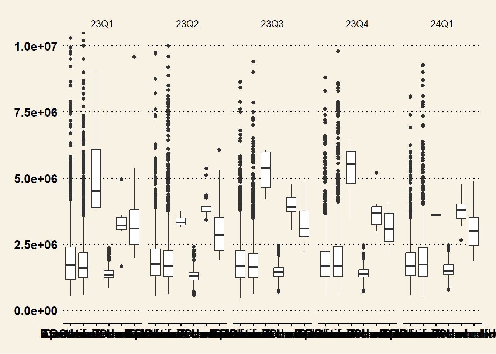
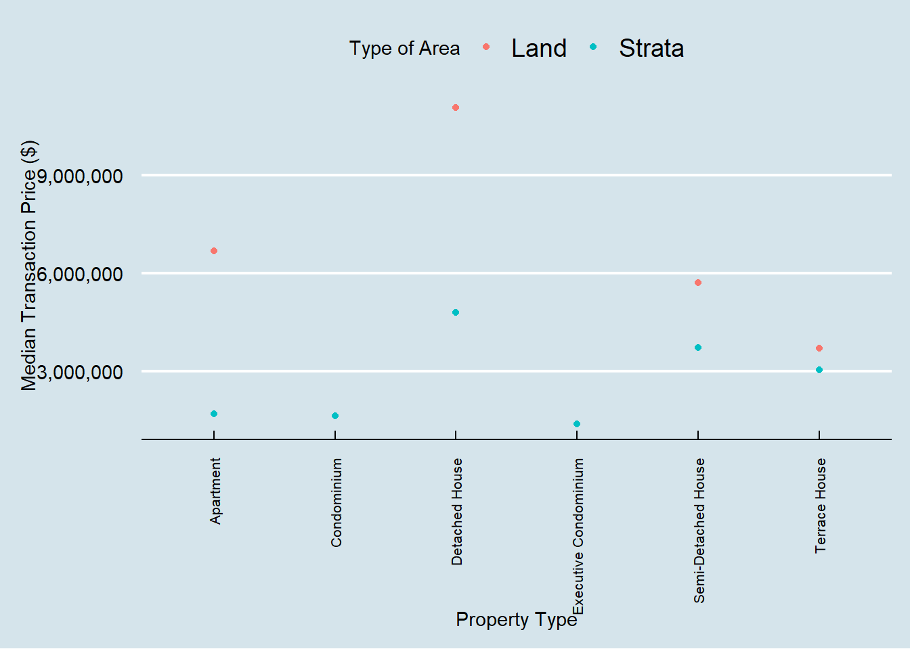
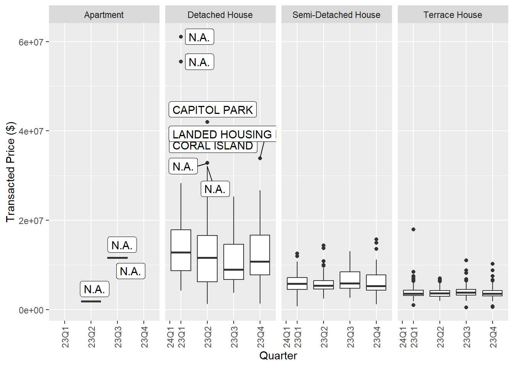
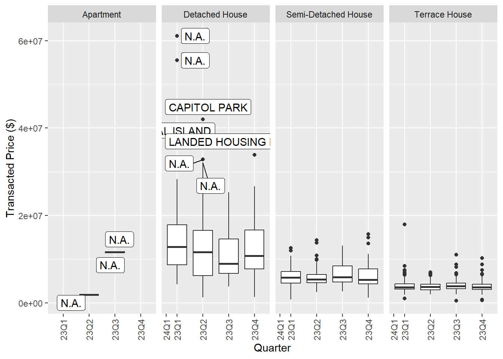
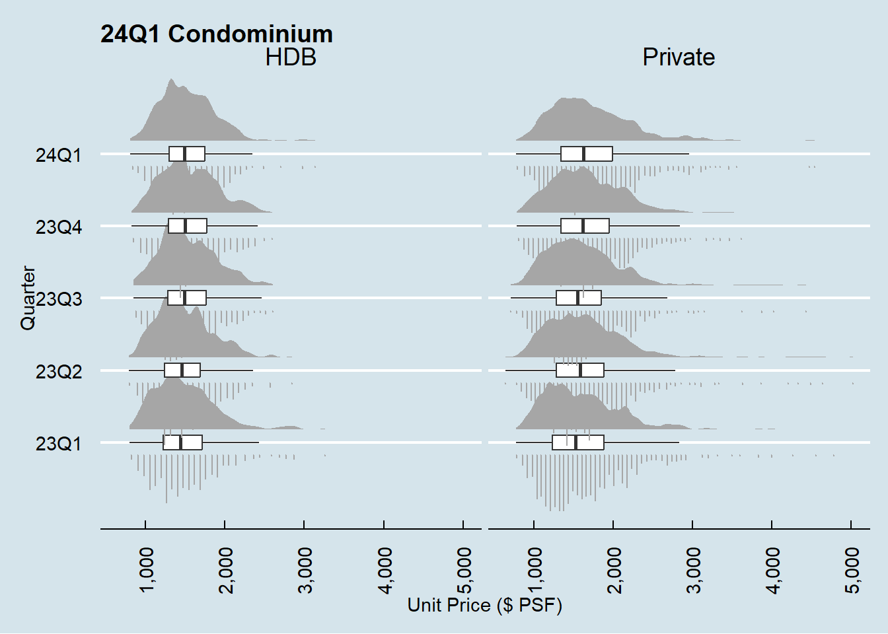

# load tidyverse from pacman
pacman::p_load(tidyverse,dplyr,ggridges,
ggthemes,colorspace,ggiraph,
plotly,patchwork,lubridate,
ggrepel,ggdist)Take-home Ex 01
Building Elegant and yet Informative Data Visualisation
For the identification of sub-market, you can navigate straight to 2.3.3 Identifying the sub-market
For the final product, you can navigate straight to 3.0 Data Visualisation.
If not, you can proceed to enjoy reading the step by step thought process for this visualisation.
1.0 Overview
1.1 Setting the scene
There are two major residential property market in Singapore, namely public and private housing. Public housing aims to meet the basic need of the general public with monthly household income less than or equal to S$14,000. For families with monthly household income more than S$14,000, they need to turn to the private residential market.
1.2 The Task
Assuming the role of a graphical editor of a media company, you are requested to prepare minimum two and maximum three data visualisation to reveal the private residential market and sub-markets of Singapore for the 1st quarter of 2024.
2.0 Set Up
2.1 Loading the packages into R
T he pac::p_load() function to load the required R packages in the working environment. The following packages are used in this set up:
- ggthemes: Extra themes, geoms, and scales for ggplot2.
- tidyverse: A collection of core packages designed for data science, used extensively for data preparation and wrangling.
- ggridges: a ggplot2 extension specially designed for plotting ridgeline plots
- colorspace:
- ggiraph: for making ‘ggplot’ graphics interactive.
- plotly: R library for plotting interactive statistical graphs.
- patchwork: specially designed for combining separate ggplot2 graphs into a single figure.
- lubridate: for easy and fast parsing of Date / Time
- ggrepel: an R package provides geoms for ggplot2 to repel overlapping text labels.
- ggdist: a ggplot2 extension specially design for visualising distribution and uncertainty
2.2 Importing the data sets
Five sets of data are provided for this exercise:
- 2023 Quarter 1 Residential Transaction: ResidentialTransaction20240308160536.csv
- 2023 Quarter 2 Residential Transaction: ResidentialTransaction20240308160736.csv
- 2023 Quarter 3 Residential Transaction: ResidentialTransaction20240308161009.csv
- 2023 Quarter 4 Residential Transaction: ResidentialTransaction20240308161109.csv
- 2024 Quarter 1 Residential Transaction: ResidentialTransaction20240414220633.csv
All five sets of data consists of past transactions between Q1 of 2023 to Q1 of 2024, with 21 variables that will be explored in detail after the data sets are imported.
# load transaction data using readr, part of tidyverse package
data.23Q1 <- read_csv("data/ResidentialTransaction20240308160536.csv")
data.23Q2 <- read_csv("data/ResidentialTransaction20240308160736.csv")
data.23Q3 <- read_csv("data/ResidentialTransaction20240308161009.csv")
data.23Q4 <- read_csv("data/ResidentialTransaction20240308161109.csv")
data.24Q1 <- read_csv("data/ResidentialTransaction20240414220633.csv")To add new column Quarter into each of the csv file.
data.23Q1$Quarter <- rep('23Q1',nrow(data.23Q1))
data.23Q2$Quarter <- rep('23Q2',nrow(data.23Q2))
data.23Q3$Quarter <- rep('23Q3',nrow(data.23Q3))
data.23Q4$Quarter <- rep('23Q4',nrow(data.23Q4))
data.24Q1$Quarter <- rep('24Q1',nrow(data.24Q1))Combining all the data set into one
df <- rbind(data.23Q1,data.23Q2,data.23Q3,data.23Q4,data.24Q1)To have a basic understanding of all 22 variables, glimpse() is used with 2024 Q1 data. We can see that there are 21 columns, with the following data types:
doubles:
Transacted Price ($),Area (SQFT),Unit Price ($ PSF),Area (SQM),Unit Price ($ PSM),Number of Unitscharacters: the rest of the 16 variables, including
Quarter
Interestingly, Nett Price is classified as characters, as it contains - character, although the rest of the columns should return doubles like Transacted Price ($)
# have a basic understanding for all 22 variables
glimpse(df)Rows: 26,806
Columns: 22
$ `Project Name` <chr> "THE REEF AT KING'S DOCK", "URBAN TREASU…
$ `Transacted Price ($)` <dbl> 2317000, 1823500, 1421112, 1258112, 1280…
$ `Area (SQFT)` <dbl> 882.65, 882.65, 1076.40, 1033.34, 871.88…
$ `Unit Price ($ PSF)` <dbl> 2625, 2066, 1320, 1218, 1468, 1767, 1095…
$ `Sale Date` <chr> "01 Jan 2023", "02 Jan 2023", "02 Jan 20…
$ Address <chr> "12 HARBOURFRONT AVENUE #05-32", "205 JA…
$ `Type of Sale` <chr> "New Sale", "New Sale", "New Sale", "New…
$ `Type of Area` <chr> "Strata", "Strata", "Strata", "Strata", …
$ `Area (SQM)` <dbl> 82.0, 82.0, 100.0, 96.0, 81.0, 308.7, 42…
$ `Unit Price ($ PSM)` <dbl> 28256, 22238, 14211, 13105, 15802, 19015…
$ `Nett Price($)` <chr> "-", "-", "-", "-", "-", "-", "-", "-", …
$ `Property Type` <chr> "Condominium", "Condominium", "Executive…
$ `Number of Units` <dbl> 1, 1, 1, 1, 1, 1, 1, 1, 1, 1, 1, 1, 1, 1…
$ Tenure <chr> "99 yrs from 12/01/2021", "Freehold", "9…
$ `Completion Date` <chr> "Uncompleted", "Uncompleted", "Uncomplet…
$ `Purchaser Address Indicator` <chr> "HDB", "Private", "HDB", "HDB", "HDB", "…
$ `Postal Code` <chr> "097996", "419535", "269343", "269294", …
$ `Postal District` <chr> "04", "14", "27", "27", "28", "19", "10"…
$ `Postal Sector` <chr> "09", "41", "26", "26", "79", "54", "27"…
$ `Planning Region` <chr> "Central Region", "East Region", "North …
$ `Planning Area` <chr> "Bukit Merah", "Bedok", "Yishun", "Yishu…
$ Quarter <chr> "23Q1", "23Q1", "23Q1", "23Q1", "23Q1", …2.3 Understanding the data
On top of the data types that is automatically assigned by R to help the program know how to process it, we can split the data into 4 types of data category to help ourselves for future analytics application. You can refer to the FAQ, Data Dictionary and Methodology in URA website.
| Variable | Type | Appropriate Scale | Remarks |
|---|---|---|---|
Project Name |
Qualitative / Nominal | Discrete | |
Transacted Price ($) |
Quantitative/ Numerical Continuous | Continuous | |
Area (SQFT) |
Quantitative/ Numerical Continuous | Continuous | |
Unit Price ($ PSF) |
Quantitative/ Numerical Continuous | Continuous | |
Sales Date |
Date / Ordinal | Discrete | |
Address |
Qualitative / Nominal | Discrete | |
Type of Sale |
Qualitative / Nominal | Discrete | |
Type of Area |
Qualitative / Nominal | Discrete | |
Area (SQM) |
Quantitative/ Numerical Continuous | Continuous | |
Unit Price ($ PSF) |
Quantitative/ Numerical Continuous | Continuous | |
Nett Price($) |
Quantitative/ Numerical Continuous | Continuous | |
Property Type |
Qualitative/ Nominal | Discrete | |
Number of Units |
Quantitative/ Numerical Discrete | Discrete | |
Tenure |
Nominal + Date / Ordinal | None + Discrete | Mixture of remaining lease date and tenure type and duration |
Completion Date |
Nominal + Date / Ordinal | None + Discrete | Mixture of “Uncomplete” status and completion date. |
Purchaser Address Indicator |
Qualitative / Nominal | Discrete | |
Postal Code |
Qualitative / Nominal | Discrete | |
Postal District |
Qualitative / Nominal | Discrete | |
Postal Sector |
Qualitative / Nominal | Discrete | |
Planning Region |
Qualitative / Nominal | Discrete | |
Planning Area |
Qualitative / Nominal | Discrete | |
Quarter |
Date / Ordinal | Discrete | Created for ease of data analysis |
Notes
- Contextually, some of the variables could be classified under ordinal. For example, I can choose to fill in the order for
Purchaser Address IndicatorasPrivatecategory is higher order thanHDBcategory. The context is purchaser that address isPrivateis likely to be a person with higher Social Economic Status (SES) compared to a purchaser withHDBas address. Same could be applied toPostal Code,Postal District,Postal Sector,Planning RegionandPlanning Area. - Special Case:
Tenureis still a character data type as of now. If we choose to use this column for analysis, we do need to do data preparation on this.Tenuredate could also be classified under continuous data for more granularity. This variable will be a mixture of nominal data type with categories like “Freehold”, and also quantitative data type using itsTenuredate. Nett Price($)is still a character data type as of now. If we choose to use this column for analysis, we do need to do data preparation on this.- Special Case:
Completion Dateis classified as character, but a quick look at the datadf, we will realise that this variable is a mix of quantitative and qualitative data type ofUncompleteand actual date of completion, which could be converted and analyse as doubles.
For simplicity of data analysis
1. Transacted Price ($) and Nett Price($) are similar. In this analysis, we will use Transacted Price ($) for simplicity, as Nett Price($) has fair amount of missing data, and it is prices after deducting the value of the indirect discounts or benefits, and not representative for all transactions.
Area (SQFT)andArea (SQM), andUnit Price ($ PSF)andUnit Price ($ PSM)are similar measures in different unit. We will useArea (SQFT)andUnit Price ($ PSF)
Next we look at the basic statistics of the current data using summary()
Project Name Transacted Price ($) Area (SQFT) Unit Price ($ PSF)
Length:26806 Min. : 440000 Min. : 322.9 Min. : 138
Class :character 1st Qu.: 1280000 1st Qu.: 721.2 1st Qu.:1384
Mode :character Median : 1660000 Median : 990.3 Median :1762
Mean : 2143286 Mean : 1191.6 Mean :1852
3rd Qu.: 2320000 3rd Qu.: 1302.4 3rd Qu.:2260
Max. :392180000 Max. :144883.4 Max. :5756
Sale Date Address Type of Sale Type of Area
Length:26806 Length:26806 Length:26806 Length:26806
Class :character Class :character Class :character Class :character
Mode :character Mode :character Mode :character Mode :character
Area (SQM) Unit Price ($ PSM) Nett Price($) Property Type
Min. : 30.0 Min. : 1484 Length:26806 Length:26806
1st Qu.: 67.0 1st Qu.:14893 Class :character Class :character
Median : 92.0 Median :18966 Mode :character Mode :character
Mean : 110.5 Mean :19930
3rd Qu.: 121.0 3rd Qu.:24327
Max. :13460.0 Max. :61962
NA's :6
Number of Units Tenure Completion Date
Min. : 1.000 Length:26806 Length:26806
1st Qu.: 1.000 Class :character Class :character
Median : 1.000 Mode :character Mode :character
Mean : 1.005
3rd Qu.: 1.000
Max. :60.000
Purchaser Address Indicator Postal Code Postal District
Length:26806 Length:26806 Length:26806
Class :character Class :character Class :character
Mode :character Mode :character Mode :character
Postal Sector Planning Region Planning Area Quarter
Length:26806 Length:26806 Length:26806 Length:26806
Class :character Class :character Class :character Class :character
Mode :character Mode :character Mode :character Mode :character
# data summary
summary(df)From the continuous data above, we can conclude that there is a possibility of extreme outliers. The Number of Units has a max of 60, while the 3rd Quartile is 1.000. Let’s examine the data by sorting it in descending order using arrange(desc()) and take a look at data with Number of Units, as it greatly affect the analysis of Transaction Price ($).
df %>%
filter(`Number of Units` > 1) %>%
arrange(desc(`Number of Units`)) # A tibble: 12 × 22
`Project Name` `Transacted Price ($)` `Area (SQFT)` `Unit Price ($ PSF)`
<chr> <dbl> <dbl> <dbl>
1 MEYER PARK 392180000 144883. 2707
2 BAGNALL COURT 115280000 68491. 1683
3 KEW LODGE 66800000 25177 2653
4 KARTAR APARTMENTS 18000000 6964. 2585
5 MONDO MANSION BUIL… 6280000 5490. 1144
6 N.A. 10600000 6747. 1571
7 N.A. 61080008 32149. 1900
8 N.A. 32200000 14123. 2280
9 N.A. 6150000 4342. 1416
10 EAST VIEW GARDEN 6100000 8338. 732
11 N.A. 8000000 3659. 2187
12 CLAYMORE PLAZA 7000000 4209. 1663
# ℹ 18 more variables: `Sale Date` <chr>, Address <chr>, `Type of Sale` <chr>,
# `Type of Area` <chr>, `Area (SQM)` <dbl>, `Unit Price ($ PSM)` <dbl>,
# `Nett Price($)` <chr>, `Property Type` <chr>, `Number of Units` <dbl>,
# Tenure <chr>, `Completion Date` <chr>, `Purchaser Address Indicator` <chr>,
# `Postal Code` <chr>, `Postal District` <chr>, `Postal Sector` <chr>,
# `Planning Region` <chr>, `Planning Area` <chr>, Quarter <chr>We have 12 rows that have transactions containing more than 1 unit sold, and a check on the Address shows that there are 5 sales that are en bloc cases which should be remove from the analysis. These en bloc cases are likely sales to companies for purpose of redevelopment rather than individual purchasers. See this link on the Meyer Park en bloc transaction. Otherwise, those 7 cases of transactions with more than one unit sold should be included as are likely the cases of purchase of multiple units or the purchase of multiple adjacent plots of land.
2.3.1 Removing the en bloc sales (irrelevant data)
For the follow code chunk, we aim to remove all the enbloc sales, including the 5 transactions that we have found in section 2.3. While we have no idea if there are more than 5 cases of en bloc sales, the follow code chunk will effectively remove all the rows with the string “ENBLOC” in Address column.
df.c <- df %>%
filter(!grepl('ENBLOC', df$Address))
df.c# A tibble: 26,801 × 22
`Project Name` `Transacted Price ($)` `Area (SQFT)` `Unit Price ($ PSF)`
<chr> <dbl> <dbl> <dbl>
1 THE REEF AT KING'S… 2317000 883. 2625
2 URBAN TREASURES 1823500 883. 2066
3 NORTH GAIA 1421112 1076. 1320
4 NORTH GAIA 1258112 1033. 1218
5 PARC BOTANNIA 1280000 872. 1468
6 NANYANG PARK 5870000 3323. 1767
7 PALMS @ SIXTH AVEN… 4950000 4521. 1095
8 N.A. 3260000 1555. 2096
9 WHISTLER GRAND 850000 441. 1926
10 NORTHOAKS 1268000 1604. 791
# ℹ 26,791 more rows
# ℹ 18 more variables: `Sale Date` <chr>, Address <chr>, `Type of Sale` <chr>,
# `Type of Area` <chr>, `Area (SQM)` <dbl>, `Unit Price ($ PSM)` <dbl>,
# `Nett Price($)` <chr>, `Property Type` <chr>, `Number of Units` <dbl>,
# Tenure <chr>, `Completion Date` <chr>, `Purchaser Address Indicator` <chr>,
# `Postal Code` <chr>, `Postal District` <chr>, `Postal Sector` <chr>,
# `Planning Region` <chr>, `Planning Area` <chr>, Quarter <chr>In the df.c tibble, it showed that 5 rows had been removed. Now there is only 26,801 rows instead of the original 26,806 rows in the initial df. This confirm that there are only 5 en bloc sales in the data frame.
2.3.2 Treatment for multiple units Transactions
After removing the 5 en bloc sales, we are still left with 7 transactions that has between 2 to 4 units sold per transaction. This has caused the Transacted Price ($) to be greatly inflated. In dealing with this, we can (1) choose to divide the Transacted Price ($) by the number of units sold, or (2) remove them from the analysis. In this analysis, we will be using method (2), to remove these transactions from the data set for further analysis. The reason to do so is that we cannot determine at this stage that each unit in the sales are equally priced, or whether each unit has the same Area size.
df.c <- df.c %>%
filter(`Number of Units` <= 1)2.3.3 Identifying the sub-markets
Land vs. Strata
To lend some background context, you can refer to this link: Landed vs. Strata Landed Basically, Strata means you only owns the property build on this land, but do not own the land itself. Land means you own the land and have more freedom and responsibility in terms of the constructions etc. The application of this knowledge for analysis is that Strata and Land classification can be identify as the sub-markets as owning a piece of land is likely to be more expensive for the purchaser compared to Strata title.
The plot below shows the 10 sub-markets in Singapore private housing market.
Land
- Apartment
- Detached House
- Semi-Detached House
- Terrace House
Strata
- Apartment
- Condominium
- Detached House
- Executive Condominium
- Semi-Detached House
- Terrace House

df %>%
select(`Transacted Price ($)`, `Type of Area`, `Property Type`) %>%
group_by(`Property Type`, `Type of Area`) %>%
summarise(`Median Transaction Price ($)` = median(`Transacted Price ($)`, .groups = 'drop')) %>%
ggplot(aes(x = `Property Type`,
y = `Median Transaction Price ($)`,
color = `Type of Area`)) + # Adding color aesthetic based on Type of Area
geom_point() +
theme(axis.text.x = element_text(size = 8, angle = 90, vjust = 0.5, hjust=1)) +
scale_y_continuous(labels = scales::comma) +
labs(color = "Type of Area")Conclusion
From the Median Transacted Price plot above, we observe that the 10 sub-markets are distinct in pricing, with Land Type of Area generally priced a lot higher than Strata, especially in the Apartment and Detached House categories.
3.0 Data Visualisation
3.1.1 Selection of Sub-markets
In this section, we will focus on the Apartment(Strata) Condominium and Executive Condominium sub-market in Singapore, out of the 10 sub-markets identified in section 2.3.3. As stated in section 1.1 Setting the scene, for families with monthly household income more than S$14,000, they need to turn to the private residential market.
Assumptions and considerations for the selecting the sub-markets to visualise:
Affordability - According to the this article, apartment(Strata), Executive Condominium and Condominium are the next most affordable type of private housing if the family is not eligible to purchase public housing. This corroborate with the Median Transaction Price plot above.
Target Audience - The target audience for this graphics will be the public who would like to consider housing option in the private residential market. The target audience are those who’s family household are above the limits and would like to look for relatively affordable housing option in the private residential market as mentioned above in point 1.
Information Required - Pricing, Location, Types of Sales, Unit Price, Size of Property
3.2 The Plots
3.2.1 The Pricing across Planning Regions
These two plots
Condominium Tenure(Lease vs Freehold)



quarter_means <- df.c %>%
filter(`Property Type` == 'Condominium',`Planning Region` == "Central Region") %>%
group_by(Quarter) %>%
summarise(mean_uprice = mean(`Unit Price ($ PSF)`))
df.c %>%
filter(`Property Type` == 'Condominium', `Planning Region` == "Central Region") %>%
ggplot(aes(y=`Unit Price ($ PSF)`,
x=`Quarter`)
)+
geom_violin() +
geom_boxplot(width = .20,
outlier.shape = NA) +
geom_point(data = quarter_means,
aes(y = mean_uprice),
color = "red",
size = 3)+
scale_y_continuous(labels = scales::comma) +
theme_economist() +
ggtitle("Condominium Unit Price ($ PSF) for Central Region") 
df.c %>%
filter(`Property Type` == 'Condominium', `Quarter` == '24Q1', `Planning Region` == "Central Region") %>%
ggplot(aes(x = `Transacted Price ($)`,
y = `Purchaser Address Indicator`,
fill = factor(stat(quantile))
)) +
stat_density_ridges(
geom = "density_ridges_gradient",
calc_ecdf = TRUE,
quantiles = c(0.05, 0.95)
) +
scale_fill_manual(
name = "Percentage of Total",
values = c("#FF00FFA0", "#FFE4E1A0", "#0000ffA0"),
labels = c("Bottom 5%", "5-95%", "Top 5%")
) +
theme_ridges()+
theme_economist() +
theme(plot.title = element_text(size=12)) +
scale_x_continuous(name = "Transacted Price in million ($)",
labels = c(0,1,2,3,4,5,6,7,8,9,10,11,12,13,14,15),
breaks = c(0,1000000,2000000,3000000,4000000,5000000,6000000,7000000,8000000,9000000,10000000,11000000, 12000000, 13000000, 14000000, 15000000)) +
ggtitle("Central Region Condominium: Purchaser Address Indicator 24Q1")df.c %>%
filter(`Type of Area` == 'Strata', `Property Type` %in% c('Apartment', 'Condominium','Executive Condominium'), `Quarter` == '24Q1', `Planning Region` == "Central Region") %>%
ggplot(aes(x = `Property Type`,
y = `Area (SQFT)`)) +
stat_halfeye(adjust = 0.5,
justification = -0.2,
.width = 0,
point_colour = NA) +
geom_boxplot(width = .20,
outlier.shape = NA) +
stat_dots(side = "left",
justification = 1.2,
binwidth = NA,
dotsize = 0.2) +
coord_flip() +
theme_economist() +
theme(plot.title = element_text(size=14), axis.text.x = element_text(vjust = 3), axis.text.y = element_text(hjust = 1)) +
scale_y_continuous(n.breaks = 10) +
ggtitle("24Q1 Central Region - Size of Property")
4.0 References
1. T.S. Kam, R for Visual Analytics Chapter 9 for visualisation of Ridgeline plots with quantile lines.
2. Claus O. Wilke, Fundamentals of Data Visualization Chapter 2 for understanding and classification of variables.
3. Stack Overflow, “Filter rows which contain a certain string” for removing en bloc sales from the data frame.